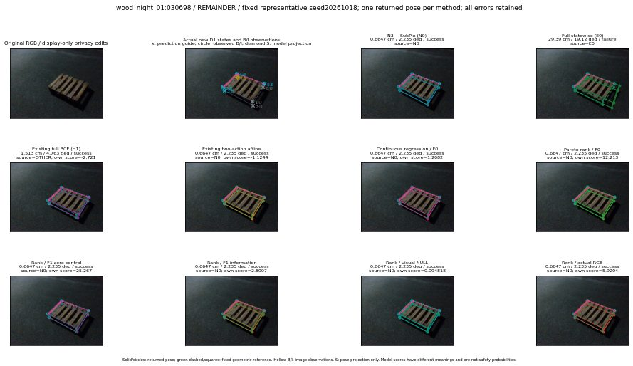

실선은 반환 자세, 초록 점선은 고정 기하 참조입니다. S는 영상 관측이 아닙니다. 점수는 모델별 의미가 다르며 보정된 안전 확률이 아닙니다. 개인정보 처리는 표시 사본에만 적용했습니다.
| 방법·seed | 위치 / 회전 / 공동성공 | 실제 출처 | 선택 후보 | 각 모델 자체 점수 |
|---|---|---|---|---|
| N0 | 0.6647 cm / 2.235 deg / success | N0 | N/A | N/A |
| E0 | 29.39 cm / 19.12 deg / failure | E0 | N/A | N/A |
| E0_REGENERATED | 29.39 cm / 19.12 deg / failure | E0 | E0_REGENERATED | N/A |
| POSEFIX_SUBPIX_PF_ANCHOR | 1.199 cm / 1.613 deg / success | OTHER | N/A | N/A |
| POSEFIX_SUBPIX_YOLO_ANCHOR | 1.23 cm / 1.984 deg / success | OTHER | N/A | N/A |
| D1_H1_MLP_s20261018 | 1.513 cm / 4.763 deg / success | OTHER | WD0/ORIGINAL_WD/sample/3 | -2.720968723297119 |
| D1_H1_MLP_s20261019 | 1.513 cm / 4.763 deg / success | OTHER | WD0/ORIGINAL_WD/sample/3 | -2.741642475128174 |
| D1_H1_MLP_s20261020 | 1.513 cm / 4.763 deg / success | OTHER | WD0/ORIGINAL_WD/sample/3 | -3.140148401260376 |
| D1_H1_PAIR_MLP_s20261018 | 0.6647 cm / 2.235 deg / success | N0 | N0 | -1.8947420120239258 |
| D1_H1_PAIR_MLP_s20261019 | 0.6647 cm / 2.235 deg / success | N0 | N0 | -2.0752527713775635 |
| D1_H1_PAIR_MLP_s20261020 | 0.6647 cm / 2.235 deg / success | N0 | N0 | -2.6761765480041504 |
| D1_H1_PAIR_ROLE_AFFINE_s20261018 | 0.6647 cm / 2.235 deg / success | N0 | N0 | -1.1243528127670288 |
| D1_H1_PAIR_ROLE_AFFINE_s20261019 | 0.6647 cm / 2.235 deg / success | N0 | N0 | -1.2681642770767212 |
| D1_H1_PAIR_ROLE_AFFINE_s20261020 | 0.6647 cm / 2.235 deg / success | N0 | N0 | -1.0061503648757935 |
| R_CONT_F0_s20261018 | 0.6647 cm / 2.235 deg / success | N0 | N0 | 1.2082463502883911 |
| R_CONT_F0_s20261019 | 1.513 cm / 4.763 deg / success | OTHER | WD0/ORIGINAL_WD/sample/3 | 1.2825562953948975 |
| R_CONT_F0_s20261020 | 1.513 cm / 4.763 deg / success | OTHER | WD0/ORIGINAL_WD/sample/3 | 1.2392847537994385 |
| R_ORDER_F0_s20261018 | 0.6647 cm / 2.235 deg / success | N0 | N0 | 12.212655067443848 |
| R_ORDER_F0_s20261019 | 0.6647 cm / 2.235 deg / success | N0 | N0 | 10.323261260986328 |
| R_ORDER_F0_s20261020 | 0.6647 cm / 2.235 deg / success | N0 | N0 | -17.441120147705078 |
| R_ORDER_F1_ZERO_s20261018 | 0.6647 cm / 2.235 deg / success | N0 | N0 | 25.266742706298828 |
| R_ORDER_F1_ZERO_s20261019 | 1.513 cm / 4.763 deg / success | OTHER | WD0/ORIGINAL_WD/sample/3 | 25.755062103271484 |
| R_ORDER_F1_ZERO_s20261020 | 0.6647 cm / 2.235 deg / success | N0 | N0 | 9.752425193786621 |
| R_ORDER_F1_s20261018 | 0.6647 cm / 2.235 deg / success | N0 | N0 | 2.8006837368011475 |
| R_ORDER_F1_s20261019 | 0.6647 cm / 2.235 deg / success | N0 | N0 | 5.0701117515563965 |
| R_ORDER_F1_s20261020 | 0.6647 cm / 2.235 deg / success | N0 | N0 | 0.44794660806655884 |
| V_ORDER_NULL_s20261018 | 0.6647 cm / 2.235 deg / success | N0 | N0 | 0.09481759369373322 |
| V_ORDER_NULL_s20261019 | 0.6647 cm / 2.235 deg / success | N0 | N0 | 0.2170189917087555 |
| V_ORDER_NULL_s20261020 | 0.6647 cm / 2.235 deg / success | N0 | N0 | 6.0607991218566895 |
| V_ORDER_RGB_s20261018 | 0.6647 cm / 2.235 deg / success | N0 | N0 | 5.920367240905762 |
| V_ORDER_RGB_s20261019 | 0.6647 cm / 2.235 deg / success | N0 | N0 | 0.11935330927371979 |
| V_ORDER_RGB_s20261020 | 0.6647 cm / 2.235 deg / success | N0 | N0 | -5.101092338562012 |